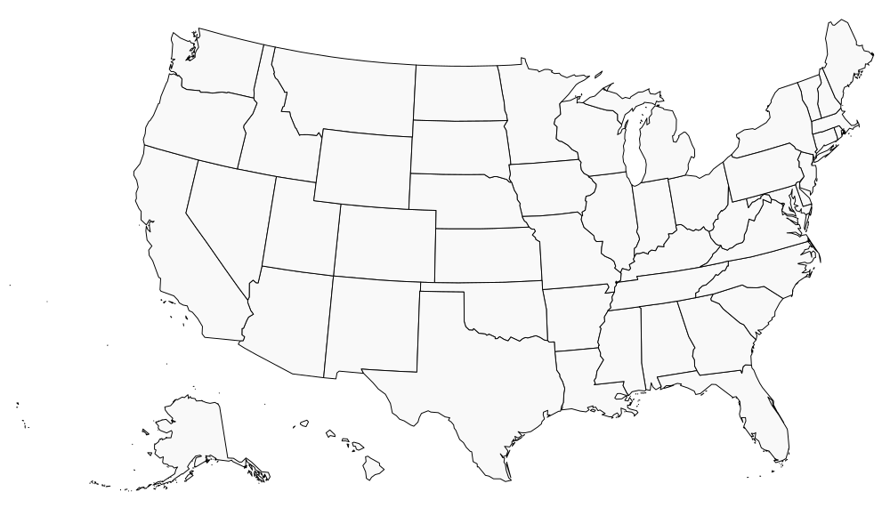

Time frame: April 21 1861 - April 9 1865
Cause: Already high tensions about the legality of slavery tipped after Abraham Lincoln was elected president, making the south afraid that slavery would be outlawed, crippling their agricultural economy. Due to this fear multiple southern states ceded from the union.
The Confederacy: Texas, Arkansas Louisiana, Tennessee, Mississippi, Alabama, Georgia, Florida, South Carolina, North Carolina and Virginia.
The Union: Maine, New York, New Hampshire, Vermont, Massachusetts, Connecticut, Rhode Island, Pennsylvania, New Jersey, Ohio, Indiana, Illinois, Kansas, Michigan, Wisconsin, Minnesota, Iowa, California, Nevada, and Oregon.
April 1861: First shots of the civil war are fired at fort sumter. after 34 hours of ceaseless bombardment union troops surrender. Confederate Victory
July 1861: Battle of bull run: General McDowell leads a union army of 30,000 men against General Johnstons army of 22,00 confedrate men in hope of crushing the rebels in their first battle and going "On to Richmond" however the confederates win the battle as union troops retreat back to washington in disarray. Confederate Victory
Febuary 1862: General Grant captures two forts on the tenesee and the comberland rivers forcing the confederates out of kentucky and much of tenesee. Union Victory
April 1862: The Batlled of Shiloh: General Grant rallys a union army from near defeat to pushing back confederate forces with heavy casulties on both sides: 13,000 casualties for the Union and 11,000 for the Confederates. Union Victory
September 1862: The Batlle of Antietam: General McClellan's union army heavily outnumbers Genral lee's confederate army scoring a much needed victory for the union at a heavy price with over 12,000 casualties for the union and 10,000 for the confederacy. Union Victory
January 1863: President Lincoln issues the emancipation proclimation stating that: “all persons held as slaves” within the rebellious states “are, and henceforward shall be free.” changing the unions motives from preserving itself to crusading against the evil of slavery making european interferance in the souths favor impossible.
July 1863: Battle of Gettysberg: After Invading the north general Lee confronts a union army. After 3 days of intense fighting leading to heavy casualties on both sides Lee withdraws and is forced to go on the defense for the rest of the war making this battle considerd the turning point of the war. Union Victory
May - July 1863: General Grant lays siege to the confederate capital of Vicksburg, Eventually the confederates surrender leaving the missipi river in total union control: splitting the confederacy in half. Union Victory
September 1864: General Sherman captures Atlanta, during his march through Georgia and the carolinas he adopts a policy of total war burning everything he could see to weaken the southerns economy and will to fight.
April 1865: General Lee surrenders to General Grant at the Appomattox Court House after he was surronded by Grant in virginia officialy ending the civil war.
Abraham Lincoln: Abraham Lincoln was born Febuary 12 1809 and led the country through the civil war. Sadly he did not get to see much peace time because he got shot by John Wilkes Booth while watching a play on April 14, 1865.
Ulysses S. Grant: Grant was born April 27 1822 and was one of the most important generals during the civil war. After the war he went on to become the 18th president of the united states and died at peace on July 23rd 1885.
Jefferson Davis: Davis was born June 3, 1808 he was the president of the confederacy. After the confederacy lost the war he was allowed to live. He died at the age of 81 on died December 6, 1889.
Robert E. Lee: Lee was born January 19, 1807 he was the best general the confederacy had however he was eventually surronded by general Grant and surrenderd. He died on October 12, 1870.
